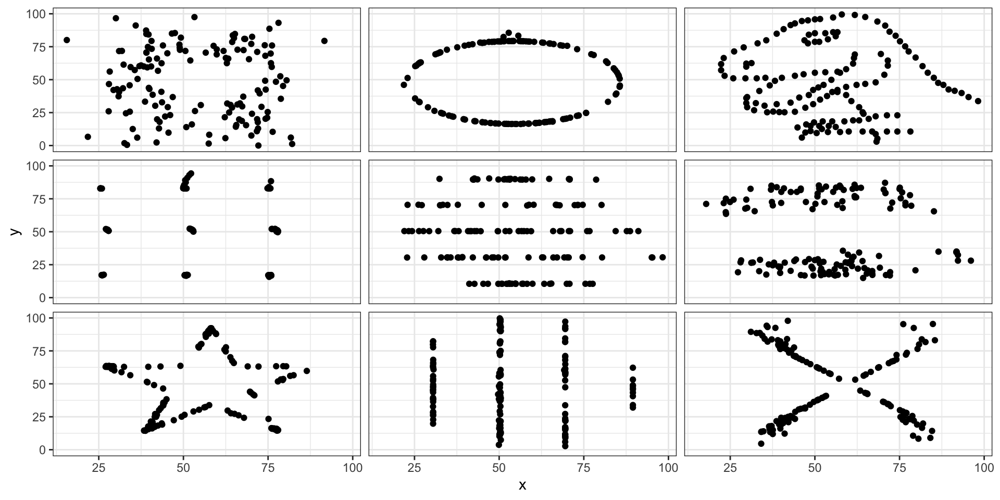

Introduction and the Grammar of Graphics
2025-01-13
Who am I?
Assistant Teaching Professor
Finished Phd in Statistics @ CMU in May 2022
Previously BS in Statistics @ CMU in 2015
Research interests: sports analytics, natural language processing, clustering, selective inference
- Industry experience: finance before returning to grad school and also as data scientist in professional sports
Why do we visualize data?

Always visualize your data before analyzing it!

Course Structure
Lectures on Mondays/Wednesdays
Weekly homeworks due Wednesdays by 11:59 PM ET
Weekly Friday labs due Saturdays by 11:59 AM ET
Two Graphics Critiques of Data Viz in the Wild (due Feb 28 and Mar 31)
Take-home exam on Wednesday, Feb 26th
Final project with individual and group grade
Work in teams on dataset you choose
In-class presentations during final week of class
Public facing HTML report due during finals week
Course logistics
All homework/lab assignments will be in Quarto. You’ll generate a PDF, which you’ll submit on Gradescope
Make sure R and RStudio are installed on your computer!
HW0 due Wednesday Jan 15 at 11:59 PM ET: install R/RStudio, install/load tidyverse, render to PDF, and post to Gradescope
- Have any installation issues? Post to the course Piazza!
Piazza: all questions about course material, HWs, exam, and projects
- Do NOT share code on Piazza
Only email for address administrative/logistic issues
Lab attendance on Friday is mandatory - submit lab assignment but don’t attend YOU LOSE 20PTS!
Questions about lab assignments will only be answered during lab
If you need to miss a lab due to illness, interviews, emergencies, etc., email me 48 hours in advance
IMPORTANT: HW0 is due Wednesday night
As seen in today’s Canvas announcement - you must submit HW0 by Wednesday night!
- This is just to make sure you have everything installed correctly and can render
.qmd files to PDF
Read through all of the directions in HW0 carefully!
You will stop saving your workspace upon exiting RStudio!
You will need to be set-up for the first lab on Friday
Course Objectives (read the syllabus)
Learn useful principles for making appropriate statistical graphics.
Critique existing graphs and remake better ones.
Visualize statistical analyses to facilitate communication.
Pinpoint the statistical claims you can/cannot make from graphics.
Write and speak publicly about statistical graphics.
Practice tidy data manipulation in R using the tidyverse
Practice reproducible workflows with Quarto
What do I mean by tidy data?
Data are often stored in tabular (or matrix) form:
library(palmerpenguins)
penguins |> slice(1:5)
# A tibble: 5 × 8
species island bill_length_mm bill_depth_mm flipper_length_mm body_mass_g
<fct> <fct> <dbl> <dbl> <int> <int>
1 Adelie Torgersen 39.1 18.7 181 3750
2 Adelie Torgersen 39.5 17.4 186 3800
3 Adelie Torgersen 40.3 18 195 3250
4 Adelie Torgersen NA NA NA NA
5 Adelie Torgersen 36.7 19.3 193 3450
# ℹ 2 more variables: sex <fct>, year <int>
Originally defined by Leland Wilkinson
data
geometries: type of geometric objects to represent data, e.g., points, lines
aesthetics: visual characteristics of geometric objects to represent data, e.g., position, size
scales: how each aesthetic is converted into values on the graph, e.g., color scales
stats: statistical transformations to summarize data, e.g., counts, means, regression lines
facets: split data and view as multiple graphs
coordinate system: 2D space the data are projected onto, e.g., Cartesian coordinates
Hadley Wickham created ggplot2
data
geom
aes: mappings of columns to geometric objects
scale: one scale for each aes variable
stat
facet
coord
labs: labels/guides for each variable and other parts of the plot, e.g., title, subtitle, caption
theme: customization of plot layout
Start with the data
Access ggplot2 from the tidyverse:
library(tidyverse)
ggplot(data = penguins)
Or equivalently using |>:
Need to add geometric objects!
penguins |>
ggplot(aes(x = bill_length_mm,
y = bill_depth_mm)) +
geom_point()
penguins %>%
ggplot(mapping = aes(x = bill_length_mm,
y = bill_depth_mm)) +
geom_point()
Modify scale, add statistical summary, and so on…
penguins %>%
ggplot(aes(x = bill_length_mm,
y = bill_depth_mm)) +
# Adjust alpha of points
geom_point(alpha = 0.5) +
# Add smooth regression line
stat_smooth(method = "lm") +
# Flip the x-axis scale
scale_x_reverse() +
# Change title & axes labels
labs(x = "Bill length (mm)",
y = "Bill depth (mm)",
title = "Clustering of penguins bills") +
# Change the theme:
theme_bw() +
# Update font size of text:
theme(axis.title = element_text(size = 12),
plot.title = element_text(size = 16))
Modify scale, add statistical summary, and so on…
In the beginning…
Michael Florent van Langren published the first (known) statistical graphic in 1644
Plots different estimates of the longitudinal distance between Toledo, Spain and Rome, Italy
i.e., visualization of collected data to aid in estimation of parameter
Edward Tufte’s Principles of Data Visualization
Graphics: visually display measured quantities by combining points, lines, coordinate systems, numbers, symbols, words, shading, color
Often our goal is to show data and/or communicate a story
Induce viewer to think about substance, not graphical methodology
Make large, complex datasets more coherent
Encourage comparison of different pieces of data
Describe, explore, and identify relationships
Avoid data distortion and data decoration
Use consistent graph design
Avoid graphs that lead to misleading conclusions!
How to Fail this Class:

What about this spiral?

Recap and next steps
Discussed the importance of data visualization in your role as a statistician / data scientist
Walked through course logistics (READ THE SYLLABUS)
Introduced the Grammar of Graphics and ggplot2 basics
Discussed data visualization principles and the role of infographics